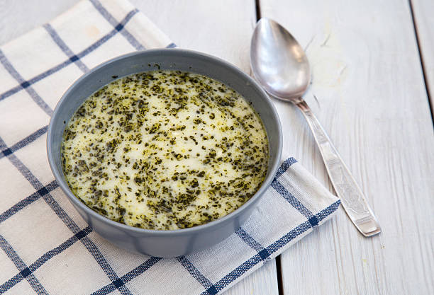

En güzel çorba tariflerinden biri olan yayla çorbası tarifinde bulunan yoğurt sayesinde bir vitamin kaynağıdır. Hatta bu yüzden yoğurt çorbası olarak bile anılır.
Ve işte çok seveceğiniz tarifi sizler için hazır...

Yayla Çorbası
Malzemeler
- 2 su bardağı yoğurt
- 1,5 yemek kaşığı (tepeleme) un
- 2 çay kaşığı tuz
- 2 yemek kaşığı limonun suyu
- 1 adet yumurta sarısı
- 1 tatlı kaşığı pul biber
- 6 su bardağı su
- 1 çay bardağı pirinç
- 2 yemek kaşığı zeytinyağı
- 2 yemek kaşığı tereyağı
- 1 yemek kaşığı kuru nane
Nasıl yapılır?
- Çorbayı pişireceğiniz tencereye 2 su bardağı yoğurt, 1,5 yemek kaşığı un, 2 çay kaşığı tuz ve 2 yemek kaşığı limon suyu ekleyip pürüzsüz bir kıvama gelene kadar karıştırın.
- 1 yumurta sarısını da karışımın üzerine ekledikten sonra tekrar karıştırın.
- 6 su bardağı soğuk suyu da ilave edip orta ateşte kaynamaya bırakın.
- Çorba kaynamaya başlayınca yıkayıp süzdüğünüz 1 çay bardağı pirinci ekleyin ve tekrar kaynamaya bırakın.
- Bu sırada ayrı bir tavada 2'şer yemek kaşığı zeytinyağı ve tereyağını kızdırın.1 yemek kaşığı kuru naneyi de üzerine ekleyip karıştırın ve ocaktan alın.
- Hazırladığınız yağı kaynamakta olan çorbanın üzerine dökün.
- Güzelce karıştırıp ocağın altını kapatın.
İŞTE PÜF NOKTALAR!!!
Terbiye karışımında kullanacağınız yoğurdun süzme olması ideal kıvama ulaşmanızı sağlayacaktır.
AFİYET OLSUN